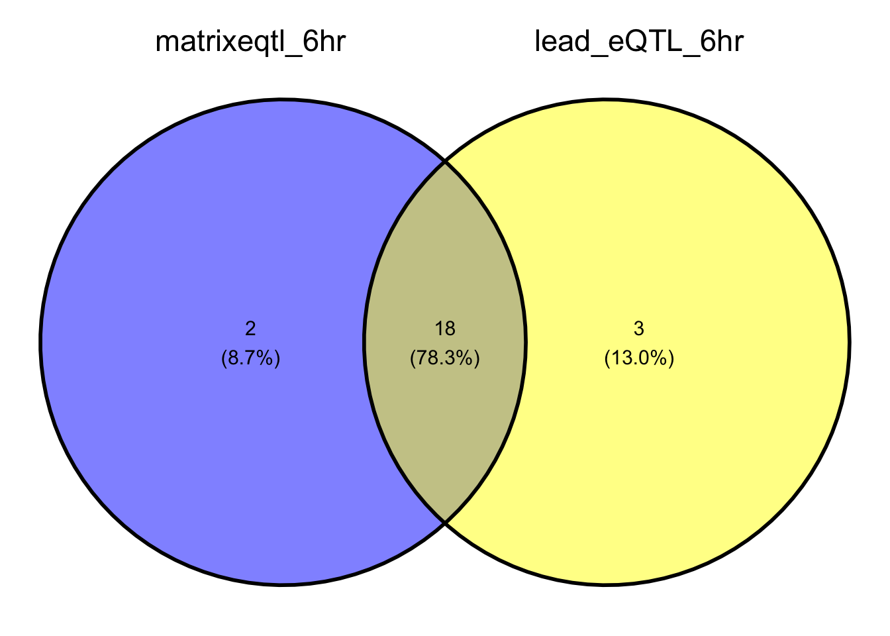
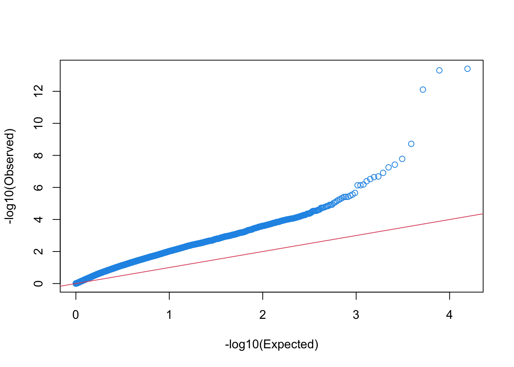
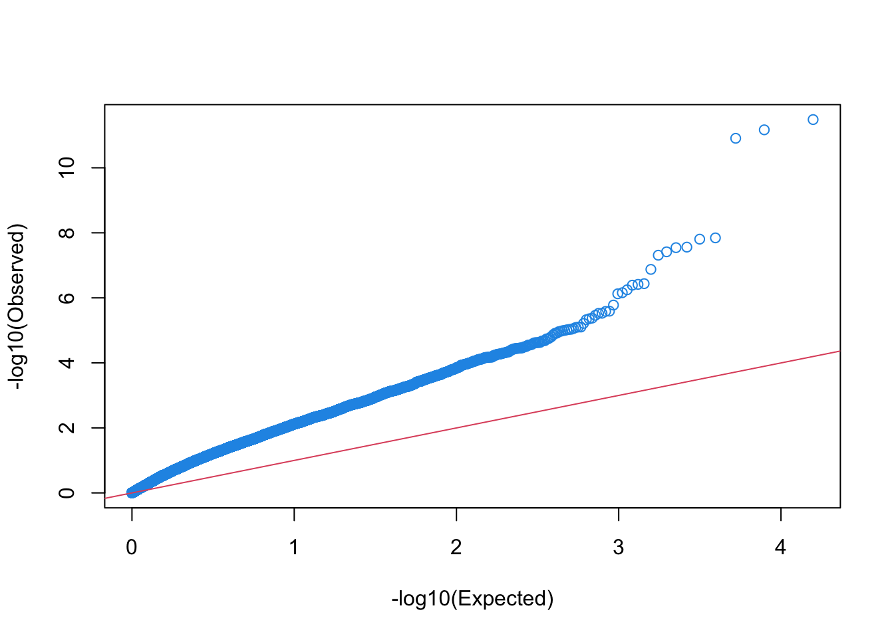

eQTL_interaction
Lifan Liang
2023-12-11
Last updated: 2024-01-12
Checks: 7 0
Knit directory: neuron_stim_eQTL100/
This reproducible R Markdown analysis was created with workflowr (version 1.7.0). The Checks tab describes the reproducibility checks that were applied when the results were created. The Past versions tab lists the development history.
Great! Since the R Markdown file has been committed to the Git repository, you know the exact version of the code that produced these results.
Great job! The global environment was empty. Objects defined in the global environment can affect the analysis in your R Markdown file in unknown ways. For reproduciblity it’s best to always run the code in an empty environment.
The command set.seed(20231109) was run prior to running
the code in the R Markdown file. Setting a seed ensures that any results
that rely on randomness, e.g. subsampling or permutations, are
reproducible.
Great job! Recording the operating system, R version, and package versions is critical for reproducibility.
Nice! There were no cached chunks for this analysis, so you can be confident that you successfully produced the results during this run.
Great job! Using relative paths to the files within your workflowr project makes it easier to run your code on other machines.
Great! You are using Git for version control. Tracking code development and connecting the code version to the results is critical for reproducibility.
The results in this page were generated with repository version 9a4c4cd. See the Past versions tab to see a history of the changes made to the R Markdown and HTML files.
Note that you need to be careful to ensure that all relevant files for
the analysis have been committed to Git prior to generating the results
(you can use wflow_publish or
wflow_git_commit). workflowr only checks the R Markdown
file, but you know if there are other scripts or data files that it
depends on. Below is the status of the Git repository when the results
were generated:
Ignored files:
Ignored: .DS_Store
Ignored: .Rhistory
Ignored: data/.DS_Store
Ignored: data/single_group_ctwas/.DS_Store
Note that any generated files, e.g. HTML, png, CSS, etc., are not included in this status report because it is ok for generated content to have uncommitted changes.
These are the previous versions of the repository in which changes were
made to the R Markdown (analysis/eQTL_interaction.Rmd) and
HTML (docs/eQTL_interaction.html) files. If you’ve
configured a remote Git repository (see ?wflow_git_remote),
click on the hyperlinks in the table below to view the files as they
were in that past version.
| File | Version | Author | Date | Message |
|---|---|---|---|---|
| Rmd | 9a4c4cd | Lifan Liang | 2024-01-12 | wflow_publish(c("analysis", "data", "docs")) |
| html | 9a4c4cd | Lifan Liang | 2024-01-12 | wflow_publish(c("analysis", "data", "docs")) |
| html | 1ac12f1 | Lifan Liang | 2024-01-05 | Build site. |
| Rmd | 5bbe54f | Lifan Liang | 2024-01-05 | wflow_publish(c("analysis", "data", "docs")) |
| html | fed4072 | Lifan Liang | 2023-12-12 | Build site. |
| Rmd | d6207ec | Lifan Liang | 2023-12-12 | wflow_publish(c("analysis", "data")) |
Interaction testing model
We attempted interaction testing with three approaches: (1) Heuristic thereshold selection based on single condition eQTL; (2) Full eQTL interaction testing with matrixeQTL; (3) Interaction testing using eQTL lead variant only based on single condition eQTL. So far, we only tested these three approaches with on GABA cells.
Heuristic dynamic eQTL
Dynamic eQTL for 1 hour and 6 hour satisfy the following criteria: (1) FDR<0.05 in either 1 hour eQTLs or 6 hour eQTLs; (2) nominal P value > 0.1 in 0 hour eQTL. This resulted in 1850 egenes / 111273 eQTls for GABA 1 hour and 1878 egenes / 114013 eQTLs for GABA 6 hour.
MatrixeQTL interaction testing
Within one cell type, we tested whether the genotype has time point
specific effects. Following the formula style in lm, the
model is:
\[ Y_i \sim T_i + G_i + Covar_i + G_i \cdot T_i \]
where \(Y_i\) is the gene expression of sample \(i\), \(T_i\) is the time point, \(G_i\) is the genotype, \(Covar\) is the covariates, and \(G_i \cdot T_i\) is the interaction term between genotype and time point.
In practice, matrixeQTL only allows effect vs. control interaction terms. Hence I run two types of interaction testing in the matrixeQTL: (1) 0 hour vs. 1 hour (1v0); (2) 0 hour vs. 6 hour (6v0).
Results on GABA cell type
Interaction testing identified 20 eGenes in both 6v0 and 1v0. Shown below are the eQTL with smallest FDR for each eGene.
| snps | gene | statistic | pvalue | FDR | beta |
|---|---|---|---|---|---|
| rs2879588 | USP13 | 8.293273 | 0.0e+00 | 0.0000001 | 1.1828938 |
| rs2062537 | ANKH | 8.254802 | 0.0e+00 | 0.0000001 | 0.6266472 |
| rs1518991 | ST3GAL5 | -7.780764 | 0.0e+00 | 0.0000003 | -0.9566247 |
| rs142285028 | SLC18A2 | 6.570599 | 0.0e+00 | 0.0001786 | 0.7733415 |
| rs514049 | ADAM10 | -6.364937 | 0.0e+00 | 0.0003834 | -0.5012765 |
| rs73015166 | RAVER1 | -5.957394 | 0.0e+00 | 0.0020144 | -0.8693457 |
| rs2015586 | PDZD8 | -5.901943 | 0.0e+00 | 0.0024588 | -0.6783419 |
| rs212532 | ECE1 | 5.794244 | 0.0e+00 | 0.0033674 | 0.5204004 |
| rs819412 | HEATR1 | 5.773586 | 0.0e+00 | 0.0034802 | 1.0835563 |
| rs9906189 | GGNBP2 | -5.601372 | 1.0e-07 | 0.0070555 | -0.5636888 |
| rs73205139 | BMT2 | -5.533924 | 1.0e-07 | 0.0073322 | -0.9746045 |
| rs59800082 | TRIM33 | 5.405518 | 2.0e-07 | 0.0116391 | 0.5531549 |
| rs7968937 | MON2 | -5.346662 | 3.0e-07 | 0.0134324 | -0.3577775 |
| rs79876692 | SLC2A9 | -5.292546 | 4.0e-07 | 0.0157308 | -2.0165864 |
| rs4934358 | PAPSS2 | -5.175735 | 7.0e-07 | 0.0251694 | -0.7818541 |
| rs3733897 | TXNDC15 | -5.154593 | 7.0e-07 | 0.0270964 | -0.6722922 |
| rs35992941 | RHD | 5.152268 | 7.0e-07 | 0.0272725 | 0.6647769 |
| rs9873028 | ATP1B3 | 5.110595 | 9.0e-07 | 0.0287385 | 0.5573733 |
| rs2055248 | PRMT3 | 5.108308 | 9.0e-07 | 0.0289870 | 0.3684225 |
| rs1049684 | CABYR | 5.007705 | 1.4e-06 | 0.0354318 | 0.7815061 |
| snps | gene | statistic | pvalue | FDR | beta |
|---|---|---|---|---|---|
| rs35336506 | TBC1D1 | 7.522735 | 0e+00 | 0.0000045 | 0.7109246 |
| rs212540 | ECE1 | 7.405290 | 0e+00 | 0.0000073 | 0.8834885 |
| rs494873 | SNAP91 | 7.288275 | 0e+00 | 0.0000073 | 0.5659714 |
| rs2062537 | ANKH | 6.770235 | 0e+00 | 0.0000887 | 0.5182975 |
| rs363225 | SLC18A2 | -6.278345 | 0e+00 | 0.0009236 | -0.7182514 |
| rs11674609 | COL4A4 | 6.065814 | 0e+00 | 0.0026578 | 0.8262405 |
| rs7178124 | TTC23 | 5.996242 | 0e+00 | 0.0028486 | 0.4854957 |
| rs350208 | SNX29 | 5.976879 | 0e+00 | 0.0031008 | 0.3998180 |
| rs227288 | MANBA | -5.836543 | 0e+00 | 0.0044854 | -0.7605838 |
| rs4904448 | SPATA7 | -5.776667 | 0e+00 | 0.0044854 | -0.5694794 |
| rs3733897 | TXNDC15 | -5.720533 | 0e+00 | 0.0051873 | -0.8121581 |
| rs2486378 | PLPPR1 | 5.518676 | 1e-07 | 0.0125749 | 0.4469913 |
| rs2361219 | KMT2C | -5.495443 | 1e-07 | 0.0138015 | -0.4275849 |
| rs13328864 | NCAM1 | 5.457895 | 2e-07 | 0.0151376 | 0.7168385 |
| rs17057781 | PTTG1 | 5.277601 | 4e-07 | 0.0245033 | 0.5414355 |
| rs11217076 | RPS25 | -5.207135 | 6e-07 | 0.0289117 | -0.2719182 |
| rs17279566 | EFEMP1 | 5.207042 | 6e-07 | 0.0289117 | 1.0069568 |
| rs26481 | ERAP1 | -5.157554 | 7e-07 | 0.0332552 | -0.5515207 |
| rs76625023 | HBS1L | 5.145625 | 7e-07 | 0.0347610 | 1.3201714 |
| rs10872155 | NUS1 | -5.099346 | 9e-07 | 0.0414441 | -1.2050193 |
Permutation testing
Inflation analysis of 1v0 interaction testing
Inflation analysis of 6v0 interaction testing
Interaction testing for lead variants
We selected eQTLs with minimum FDR<20% in any time point. And then
selected lead variant for each gene within this subset. It results in
7547 lead eQTLs in 0 hour, 8269 lead eQTLs in 1 hour, and 8498 lead
eQTLs in 6 hour. We used lm in base R with the same model
as in matrixeQTL. And then we applied Benjamini Hochberg method to
adjust nominal P values. The resulting eGenes is very similar to
matrixeQTL results.
Loading required package: dplyr
Attaching package: 'dplyr'The following objects are masked from 'package:stats':
filter, lagThe following objects are masked from 'package:base':
intersect, setdiff, setequal, unionLoading required package: gridLoading required package: ggplot2
| Version | Author | Date |
|---|---|---|
| 9a4c4cd | Lifan Liang | 2024-01-12 |

| Version | Author | Date |
|---|---|---|
| 9a4c4cd | Lifan Liang | 2024-01-12 |
Potential inflation
Despite the similarity, nominal P values may be inflated.
lambda (inflation factor) are 3.9 and 4.3 respectively for
1v0 and 6v0. Perhaps inflation factor is not suitable for lead variant
testing. I will need to perform permutation analysis.
Loading required package: gap.datasetsgap version 1.2.3-6
| Version | Author | Date |
|---|---|---|
| 9a4c4cd | Lifan Liang | 2024-01-12 |

| Version | Author | Date |
|---|---|---|
| 9a4c4cd | Lifan Liang | 2024-01-12 |
Visualization of dynamic eQTL
Most interaction eQTL actually has opposite effect direction, as shown by the figure below
The strongest eQTL in GABA 6 hour vs 0 hour
In addition, BH correction may be too stringent. Figure below is an example with high FDR and plausible time point-specific effect.
Interaction eQTL with FDR>0.99 but Qvalue<0.05
sessionInfo()R version 4.1.2 (2021-11-01)
Platform: x86_64-apple-darwin17.0 (64-bit)
Running under: macOS Big Sur 10.16
Matrix products: default
BLAS: /Library/Frameworks/R.framework/Versions/4.1/Resources/lib/libRblas.0.dylib
LAPACK: /Library/Frameworks/R.framework/Versions/4.1/Resources/lib/libRlapack.dylib
locale:
[1] en_US.UTF-8/en_US.UTF-8/en_US.UTF-8/C/en_US.UTF-8/en_US.UTF-8
attached base packages:
[1] grid stats graphics grDevices utils datasets methods
[8] base
other attached packages:
[1] gap_1.2.3-6 gap.datasets_0.0.5 ggvenn_0.1.10 ggplot2_3.3.5
[5] dplyr_1.0.7 workflowr_1.7.0
loaded via a namespace (and not attached):
[1] tidyselect_1.1.1 xfun_0.29 bslib_0.3.1 purrr_0.3.4
[5] colorspace_2.0-2 vctrs_0.3.8 generics_0.1.2 htmltools_0.5.2
[9] yaml_2.2.2 utf8_1.2.2 rlang_1.0.0 jquerylib_0.1.4
[13] later_1.3.0 pillar_1.7.0 withr_2.4.3 glue_1.6.1
[17] DBI_1.1.2 lifecycle_1.0.1 stringr_1.4.0 munsell_0.5.0
[21] gtable_0.3.0 evaluate_0.14 labeling_0.4.2 knitr_1.37
[25] callr_3.7.0 fastmap_1.1.0 httpuv_1.6.5 ps_1.6.0
[29] fansi_1.0.2 highr_0.9 Rcpp_1.0.11 promises_1.2.0.1
[33] scales_1.1.1 jsonlite_1.7.3 farver_2.1.0 fs_1.5.2
[37] digest_0.6.29 stringi_1.7.6 processx_3.5.2 getPass_0.2-2
[41] rprojroot_2.0.2 cli_3.1.1 tools_4.1.2 magrittr_2.0.2
[45] sass_0.4.1 tibble_3.1.6 crayon_1.4.2 whisker_0.4
[49] pkgconfig_2.0.3 ellipsis_0.3.2 assertthat_0.2.1 rmarkdown_2.11
[53] httr_1.4.2 rstudioapi_0.13 R6_2.5.1 git2r_0.29.0
[57] compiler_4.1.2